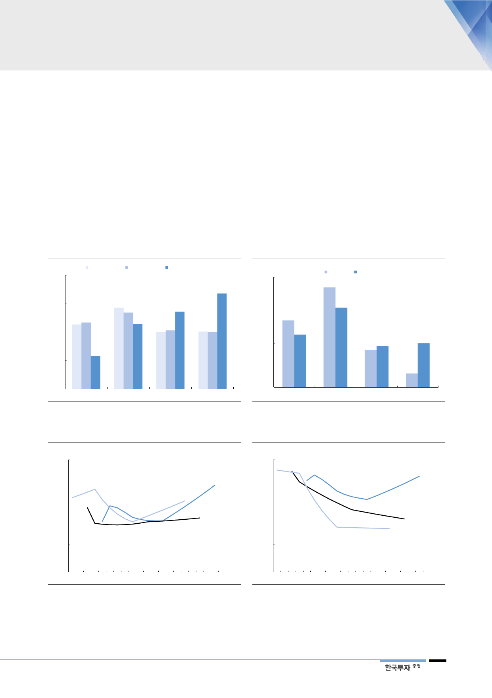

에너지 전환 정책 따라
늘어나는 천연가스 수요
2. 천연가스 수요 구조적 증가
에너지 정책에서 환경과 안전에 대한 고민이 커지면서 LNG 발전이 중요해지고
있다. 정부는 작년 12월 수립된 8차 전력수급계획에서 2031년 LNG 발전설비
비중을 27%로 제시했다. 지난 7차(15년)와 6차(13년) 계획에서 15년 뒤 전망
을 20% 내외로 봤던 것보다 크게 상향된 것이다. 올해 4월 확정된 13차 천연가
스수급계획에서도 천연가스 수요가 2031년까지 연평균 1.2% 증가할 것으로 전
망했다. 신규 기저발전 설비 확충이 완료되는 2024년까지는 줄어들다가 2025년
부터는 2.5%씩 증가하는 그림이다. 기존 계획에서 소폭 감소할 것으로 예상했던
천연가스 수요를 다시 늘어나는 방향으로 4년 만에 수정한 것이다. 2029년 발전
용 수요 전망은 2년 전 제시한 12차 계획보다 67% 높아졌다.
[그림 10] 발전설비 비중 – 15년 뒤 LNG 비중 상향
(%)
40
6차(2027년) 7차(2029년) 8차(2031년) 계획
33.6
30
27.2
22.9
20
11.7
10
0
원자력
석탄
자료: 산업통상자원부, 한국투자증권
LNG
신재생
[그림 11] 발전량 비중 – 신재생 다음으로 LNG 늘어날 것
(%)
50
2017년 2030년 계획
40
36.1
30
23.9
20
18.8
20.0
10
0
원자력
석탄
자료: 산업통상자원부, 한국투자증권
LNG
신재생
[그림 12] 천연가스 수요 2025~2031년 CAGR +2.5% 전망
(백만톤)
45
천연가스 수요 전망
13차
40
11차
(2018)
(2014)
35
12차
(2016)
30
[그림 13] 발전용 천연가스 수요 다시 늘어날 것으로 전망
(백만톤)
20
15
발전용 천연가스 수요 전망
13차
(2018)
10
12차
11차 (2016)
(2014)
5
25
2012 2015 2018F 2021F 2024F 2027F 2030F
자료: 산업통상자원부, 한국투자증권
0
2012 2015 2018F 2021F 2024F 2027F 2030F
주: 천연가스는 발전용과 도시가스용으로 구분되며 2017년 기준 47:53 비율을 기록
자료: 산업통상자원부, 한국투자증권
7